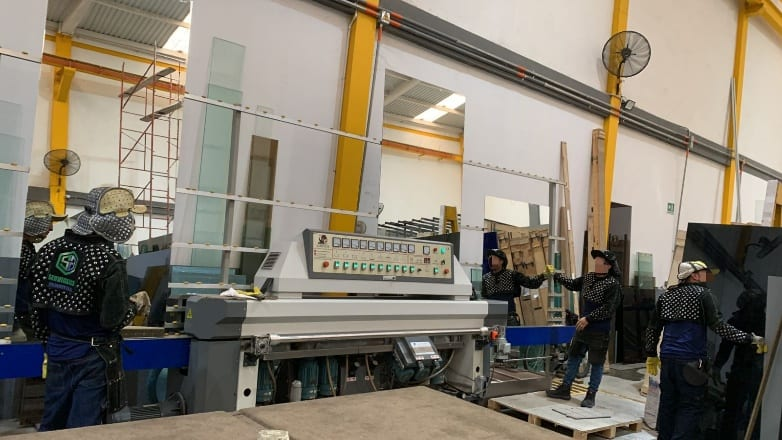
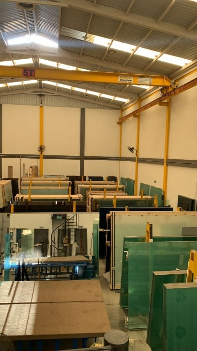
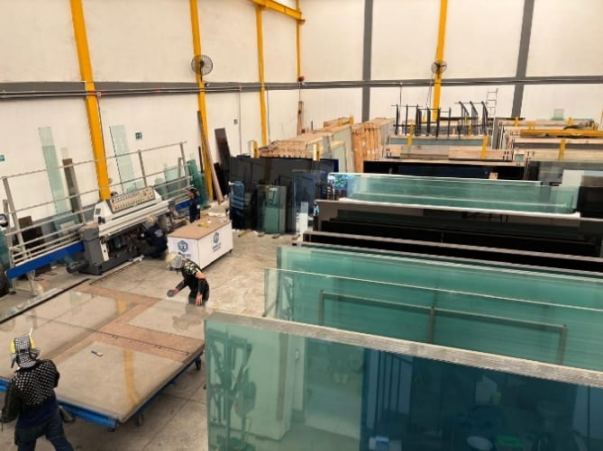
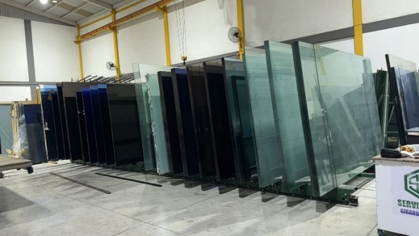
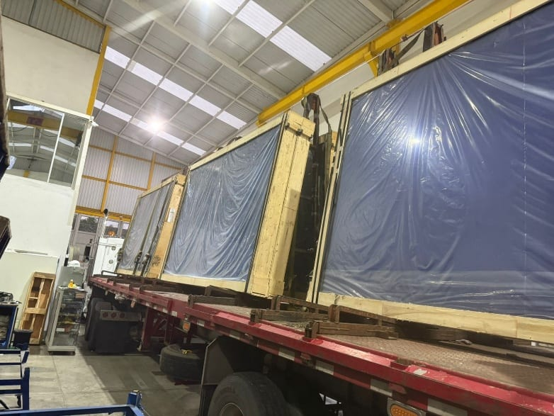

Vidrios a la Medida y Alta Resistencia
Comercializamos y distribuimos vidrios desde 2 mm hasta 19 mm, incluyendo templados, laminados y espejos. Suministramos exactamente la especificación técnica que tu obra o remodelación exige.
Desde la distribución mayorista de vidrios de alta especificación hasta los acabados más finos para tu hogar. En Serviglass Girardot te garantizamos medidas exactas, materiales de máxima resistencia y entregas oportunas, sin importar el tamaño de tu proyecto.

Comercializamos y distribuimos vidrios desde 2 mm hasta 19 mm, incluyendo templados, laminados y espejos. Suministramos exactamente la especificación técnica que tu obra o remodelación exige.
Elevamos la estética de tus espacios con corte, pulido, brillado, biselado, sandblasting y fabricación experta de divisiones de baño. Cuidamos cada detalle para entregas impecables.
Sabemos que tu tiempo y tu obra no pueden parar. Trabajamos con ritmo, agilidad y máxima eficiencia para garantizar la entrega de tu pedido en el tiempo pactado y sin retrasos.
Protegemos tu inversión. Operamos bajo estrictos controles y rigor normativo para entregarte productos sin errores ni desperdicios, garantizando la máxima durabilidad y seguridad.
Nuestro equipo experto te acompaña de principio a fin. Respondemos con rapidez y calma ante cualquier eventualidad o requerimiento especial de tu proyecto.
Somos el aliado estratégico indiscutible en Girardot y la región. Te ofrecemos trato directo, transparencia comercial, precios justos y el respaldo de una empresa en constante crecimiento.
Excelente servicio, destacando la buena atención y asesoría durante todos los procesos. El trabajo realizado en el vidrio es de muy buena calidad, con acabados impecables y cuidado en los detalles, demostrando responsabilidad, compromiso y profesionalismo.
Destacamos el excelente cumplimiento y la calidad del vidrio que nos suministran. Agradecemos su compromiso, responsabilidad y atención, factores que han contribuido positivamente a nuestros proyectos.
Excelente servicio, destacando la buena atención y asesoría durante todos los procesos. El trabajo realizado en el vidrio es de muy buena calidad, con acabados impecables y cuidado en los detalles, demostrando responsabilidad, compromiso y profesionalismo.
Muy satisfecho con el servicio y la calidad de los productos. Llevo trabajando con ellos en diferentes proyectos y siempre han respondido muy bien, tanto en atención como en cumplimiento. Un excelente proveedor, totalmente recomendado.
Serviglass Girardot S.A.S. se ha consolidado como el aliado estratégico más fuerte en la comercialización y distribución mayorista de vidrio en la región. Nuestro crecimiento sostenido es el resultado de un compromiso inquebrantable con el abastecimiento oportuno, la seguridad y la expansión constante de nuestro portafolio de productos importados y nacionales.
No somos un simple proveedor; somos el motor de tu negocio. Nos dedicamos a distribuir vidrio de alta especificación para aplicaciones comerciales, industriales y residenciales. Garantizamos a nuestros clientes (ferreterías, transformadores y constructores) inventario constante, eficiencia logística y una calidad que protege su inversión.
Nuestra mirada al 2030 es clara: liderar indiscutiblemente la distribución regional, aportando soluciones eficientes y rentables que impulsen el desarrollo productivo e industrial de toda nuestra zona de influencia.
CEO y Fundador
Lidera la visión estratégica y la expansión de la compañía. Su enfoque en el crecimiento regional y las relaciones comerciales sólidas han posicionado a Serviglass Girardot S.A.S como el distribuidor de mayor confianza en Girardot.
Líder Administrativa y de Recursos Humanos
Garantiza la eficiencia operativa y el bienestar del equipo. Su disciplina y rigor normativo aseguran que toda nuestra infraestructura y talento humano operen bajo los más altos estándares de calidad.
Líder de Bodega y Almacenamiento
Experto en logística. Su orientación a la calidad y manejo eficiente de recursos garantizan despachos exactos, rápidos y con cero mermas para nuestros clientes mayoristas.
Asesora Comercial
Su vitalidad, dinamismo y profunda orientación al cliente la convierten en tu mejor aliada estratégica. Laura te guiará para optimizar tus compras, ofreciendo soluciones a la medida de las necesidades de tu empresa.




Aseguramos un abastecimiento continuo para ferreterías, vidrierías, industrias y constructoras. Garantizamos inventario permanente a precios de importador directo para que tu negocio nunca detenga su producción.
Suministramos materiales resistentes y certificados diseñados para soportar impactos, exigencias estructurales y condiciones ambientales extremas en proyectos comerciales y residenciales.
Transformamos la lámina de vidrio en piezas maestras. Contamos con capacidad técnica para realizar saques, perforaciones y acabados perimetrales con tolerancias milimétricas.
Diseñamos, fabricamos e instalamos soluciones modernas en vidrio que aportan elegancia, amplitud y seguridad a hogares, hoteles y oficinas.
Enriquecemos la estética de cualquier ambiente interior con espejos de alta claridad reflectiva y vidrios texturizados de diseño exclusivo para arquitectura e interiorismo.
Acompañamos a ingenieros, arquitectos y contratistas en la planeación de sus compras. Calculamos los cortes óptimos para reducir costos, prevenir imprevistos y eliminar desperdicios en obra.